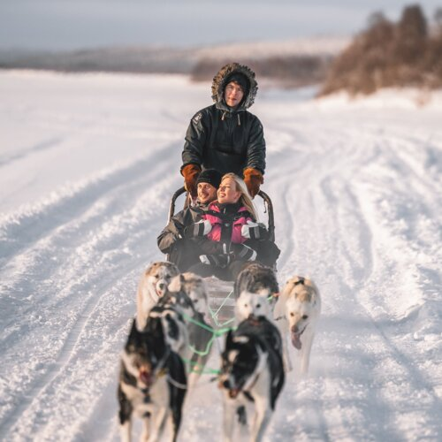
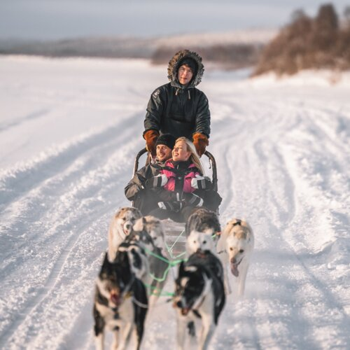

Nordic Frost resort is an exquisite blend of comfort and wilderness.
The location right beside Lake Inari makes the hotel the perfect place
to see the Northern Lights. The restaurant's large windows give a
panoramic view over the lake. Just five minutes from Sami village
Inari's attractions and services, this top resort in Inari offers
the perfect setting for combining quality accommodation with pristine
nature and Arctic activities! Our hotel has wilderness rooms, log
cabins, aurora cabins and Inari Arctic Chalets.
Northern lights at your doorstep, an arctic dream
Facility amenities
Sauna
Restaurant
Parking
Free Wifi
Activities
Nova Skyland offers peaceful and natural surroundings as well as all
the amenities. Only a 200-metre walk takes you to the Santa Claus
Village. We are dedicated to creating a holiday with detail-oriented
for host and guests alike. At Nova Skyland you are in the centre of
the Arctic Circle, next door to the real Santa, and in a town in the
middle of wilderness. Nova safari activities are exclusively available
for guests staying at Nova Skyland and Nova Galaxy. This exclusivity
ensures a seamless experience, allowing our guests to enjoy the
activities in a serene and uncrowded setting.


 
